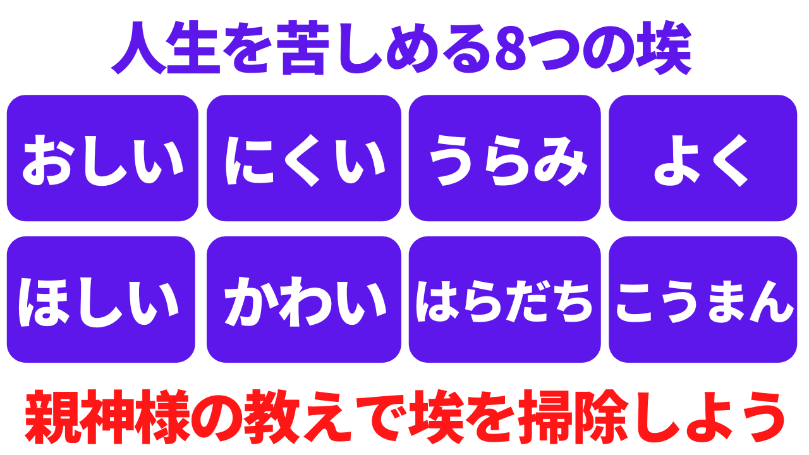
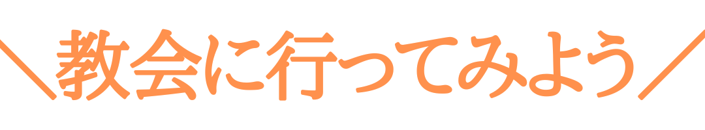
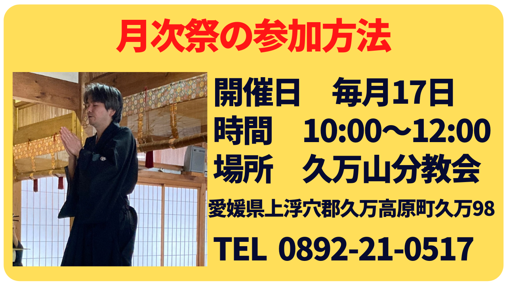

天理教は心を磨く宗教です
天理教は天保9年から続く宗教であり、日々を陽気に暮らすために心のあり方を教えています。
教え1：体は神様からの借りもの
人体は神様からの借りものです。日々何の不自由もなく使わせていただけることに感謝の気持ちを持とう。
教え2：心だけは自分のもの
人の幸福はその境遇にあるのではなく、人生の苦楽は外見によって定まるのではありません。すべては銘々の心の持ち方によって決まります。
心の持ち方を正して、日々喜び勇んで生活するのが幸福への道です。
人はあさはかな人間心から、何事も自分の勝手になるものと思い、とにかく、己一人の苦楽や利害にとらわれて、一れつの和楽を望まれる親心に、もとる心を遣いがちです。
親神様は、かかる心遣いを埃にたとえて戒められています。
天理教の教えで心を整え、より良い人生を歩みませんか？
月次祭に参加するメリット
月次祭（つきなみさい）とは日々無事に暮らしていることを神様に感謝するお祭りです。未信者でも手ぶらで参加できます。
特典1：お下がりがもらえる！
月次祭が終わった後、神様に祀っていた野菜がもらえます！
特典2：お弁当が食べられる！
教会からお弁当を受け取り、参加者みんなで歓談しながらいただきます！
特典3：良い人間関係がつくれる！

天理教の信者は心を磨いているので温かく迎え入れます。
特典4：人生の視野が広がる！

幅広い年代の参加者が集まるので話を聞くだけでも人生の視野が広がります。また、天理教の教えは天保9年から続いているため、時代を超えた心のあり方を学べます。
特典5：自分を見つめ直せる！
心のあり方を学ぶとは、自分を知ることにつながります。
自分を知る重要性は天理教だけでなく、論語や神社でも同様に説かれています。
偉人は亡くなって書物で学ぶしかありませんが、宗教は生きている人が教えを繋いでいるので対面で学ぶことができます。
画像をクリックすると電話ができます。「ウェブサイトを見て月次祭に参加したいです。」とお伝えいただくと予約を承ります。